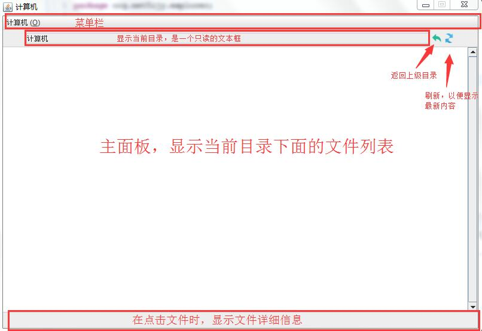
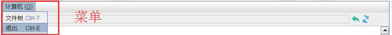
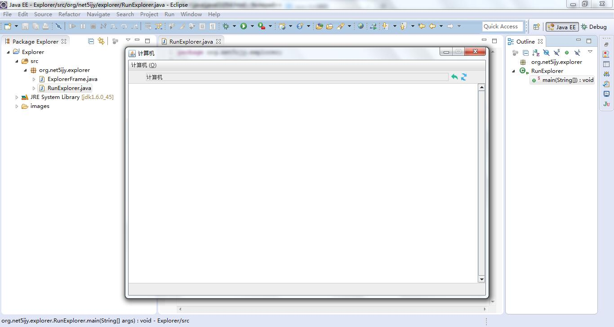

第五十四节 Swing 开发简单资源管理器程序（开发界面结构）
一、界面结构
主要分为4个部分：窗口顶部的菜单栏、显示当前位置和回退刷新按钮的工具栏、中部主面板、底部状态栏面板，即：

菜单栏显示效果：

二、添加组件
1、 定义组件
编写一个 ExplorerFrame 继承 JFrame 类，并添加核心组件的相关字段
package org.net5ijy.explorer; import java.awt.*; import java.io.File; import java.util.Enumeration; import javax.swing.*; /** * 资源管理器窗口类 * 默认宽800，高550 * 窗口禁用缩放、居中 * 可以使用ExplorerFrame(String title)构造方法创建指定Title的窗口 * 可以使用ExplorerFrame()构造方法创建默认Title的窗口 * 该窗口主要包含：菜单栏、当前位置显示、刷新按钮、上级按钮、文件显示主面板、文件详情信息条等组件 * 第一次打开窗口时会显示系统根目录 * 点击面板上的目录时，会跳转至该目录，显示目录下的全部文件 * 点击上级按钮时，会跳转至当前目录的父级目录 * 点击刷新按钮时，会将当前主面板的显示信息进行刷新 * 点击文件树菜单后，会打开显示文件树的窗口 */ public class ExplorerFrame extends JFrame { // 窗口的宽 public static final int WIDTH = 800; // 窗口的高 public static final int HEIGHT = 550; // 菜单栏 private JMenuBar menuBar; // 计算机菜单 private JMenu menu1; // 计算机菜单子项，分别是：文件树、退出 private JMenuItem item1, item2; // 记录当前位置的文本域 private JTextField locationText = null; // 刷新按钮和上级按钮 private JButton refreshButton, backButton; // 显示文件的主面板 private JPanel mainPanel; // 主面板滚动 private JScrollPane mainScroller; // 下方的文件详细信息条 private JPanel detailPanel; // 显示文件详细信息，放在detailPanel里面 private JLabel fileDetail; }
2、 添加菜单栏方法
菜单栏位于窗口顶部，用于显示程序的核心功能。以本程序为例，菜单栏包含一个菜单，这个菜单下面有两个菜单项：文件树、退出。点击“文件树”会显示当前目录下面的目录树信息，并且可以到处为txt格式的文件；点击“退出”则会直接退出程序。
菜单栏显示效果：
addMenuBar 方法：
/** * 添加菜单栏 * 一个菜单：计算机 * 菜单下有两个菜单项：文件树、退出 */ private void addMenuBar() { // 创建菜单栏 this.menuBar = new JMenuBar(); // 计算机菜单 this.menu1 = new JMenu("计算机 (O)"); this.menu1.setMnemonic(KeyEvent.VK_O); // 文件树菜单项 this.item1 = new JMenuItem("文件树"); this.item1.setAccelerator(KeyStroke.getKeyStroke(KeyEvent.VK_T, InputEvent.CTRL_MASK)); // 退出菜单项 this.item2 = new JMenuItem("退出"); this.item2.setAccelerator(KeyStroke.getKeyStroke(KeyEvent.VK_E, InputEvent.CTRL_MASK)); // 为退出菜单项添加退出事件 this.item2.addActionListener(new ActionListener() { @Override public void actionPerformed(ActionEvent e) { System.exit(0); } }); // 把两个菜单项添加到“计算机”菜单 this.menu1.add(this.item1); this.menu1.add(this.item2); // 把“计算机”添加到菜单栏 this.menuBar.add(this.menu1); // 把菜单栏添加到窗口上 this.setJMenuBar(this.menuBar); }
3、 添加工具栏方法
工具栏区域核心是一个 JPanel 面板，面板中有一个 JTextField 用于显示当前目录位置，有两个 JButton 用于返回上级目录、刷新主面板
/** * 添加状态栏 * 当前位置文本初始化为：计算机 * 刷新按钮点击会刷新当前显示面板 * 上级按钮点击会返回到上级目录 * 在窗口的北部 */ private void addLocationTextField() { JPanel p = new JPanel(); // 当前位置文本域：只读 this.locationText = new JTextField(61); this.locationText.setBorder(BorderFactory.createLineBorder(new Color(204, 204, 204))); this.locationText.setEditable(false); this.locationText.setText("计算机"); p.add(this.locationText); // 刷新按钮 this.refreshButton = new JButton(new ImageIcon( System.getProperty("user.dir") + File.separator + "images" + File.separator + "icon" + File.separator + "refresh_16.png")); this.refreshButton.setBorder(null); this.refreshButton.setBorderPainted(false); this.refreshButton.setContentAreaFilled(false); this.refreshButton.setCursor(new Cursor(Cursor.HAND_CURSOR)); this.refreshButton.setToolTipText("刷新"); // 上一级按钮 this.backButton = new JButton(new ImageIcon( System.getProperty("user.dir") + File.separator + "images" + File.separator + "icon" + File.separator + "back_16.png")); this.backButton.setBorder(null); this.backButton.setBorderPainted(false); this.backButton.setContentAreaFilled(false); this.backButton.setCursor(new Cursor(Cursor.HAND_CURSOR)); this.backButton.setToolTipText("上一级"); // 把“刷新按钮”和“上一级按钮”添加到面板 p.add(this.backButton); p.add(this.refreshButton); // 把面板添加到窗口的“北部” this.add(BorderLayout.NORTH, p); }
4、 添加主面板方法
主面板使用网格布局显示当前目录下的全部文件列表，在窗口的中部，使用 JScrollPane 包裹一个 JPanel 实现滚动效果
/** * 添加主面板 * 主面板有一个JScrollPane负责显示滚动效果，上下边框为1，颜色为(204,204,204)，单次滚动距离为20 * 在JScrollPane又有一个JPanel，背景色白色，空白边框15 */ private void addMainPanel() { // 主面板 this.mainPanel = new JPanel(); // 使用网格布局显示文件列表 this.mainPanel.setLayout(new GridLayout(5, 1)); this.mainPanel.setBackground(Color.WHITE); this.mainPanel.setBorder(BorderFactory .createEmptyBorder(15, 15, 15, 15)); // 添加一个滚动面板，负责显示滚动效果 // 垂直方向显示滚动条 // 每次滚动20 this.mainScroller = new JScrollPane(this.mainPanel); this.mainScroller.setBorder(BorderFactory.createMatteBorder(1, 0, 1, 0, new Color(204, 204, 204))); this.mainScroller .setVerticalScrollBarPolicy(JScrollPane.VERTICAL_SCROLLBAR_ALWAYS); this.mainScroller.getVerticalScrollBar().setUnitIncrement(20); // 把滚动面板添加到窗口中 this.add(BorderLayout.CENTER, this.mainScroller); }
5、 添加状态栏方法
状态栏显示文件信息，包括：文件名、字节数、最后修改时间
/** * 添加详细信息区域 * 一个左对齐显示的JPanel * 在窗口的南部 */ private void addDetail() { this.detailPanel = new JPanel(); this.detailPanel.setLayout(new FlowLayout(FlowLayout.LEFT)); this.fileDetail = new JLabel(" "); this.detailPanel.add(this.fileDetail); this.add(BorderLayout.SOUTH, this.detailPanel); }
三、创建窗口、启动程序
1、 构造方法
两个构造方法，一个无参，一个有参（可以定义Title）
/** * 使用默认的title显示窗口，title为ExplorerFrame */ public ExplorerFrame() throws HeadlessException { this("ExplorerFrame"); } /** * 使用指定的Title显示窗口 * 该窗口禁用缩放、居中 * 会把菜单、当前位置、主面板、详细信息条显示到面板 * 第一次显示的是系统的根目录 */ public ExplorerFrame(String title) throws HeadlessException { super(title); // 窗口样式设置 Font font = new Font("Dialog", Font.PLAIN, 12); Enumeration<?> keys = UIManager.getDefaults().keys(); while (keys.hasMoreElements()) { Object key = keys.nextElement(); Object value = UIManager.get(key); if (value instanceof javax.swing.plaf.FontUIResource) { UIManager.put(key, font); } } // 设置窗口大小 this.setSize(WIDTH, HEIGHT); // 禁止缩放 this.setResizable(false); // 居中 this.setLocation( (Toolkit.getDefaultToolkit().getScreenSize().width - WIDTH) / 2, (Toolkit.getDefaultToolkit().getScreenSize().height - HEIGHT) / 2); // 关闭窗口 this.setDefaultCloseOperation(EXIT_ON_CLOSE); /* 以下为添加组件代码 */ // 添加菜单 this.addMenuBar(); // 添加位置文本域、刷新按钮、上级按钮 this.addLocationTextField(); // 添加主面板 this.addMainPanel(); // 添加详细信息显示条 this.addDetail(); // 显示窗口 this.validate(); this.setVisible(true); }
2、 程序启动
package org.net5ijy.explorer;
public class RunExplorer {
public static void main(String[] args) {
new ExplorerFrame("计算机");
}
}
运行效果如下：

第五十三节 Swing 和简单资源管理器程序简介
第五十五节 Swing 开发简单资源管理器程序（开发核心功能）
加入 QQ 群：5ijy网站开发交流
 ，获取更多源代码和开发环境配置信息。
，获取更多源代码和开发环境配置信息。